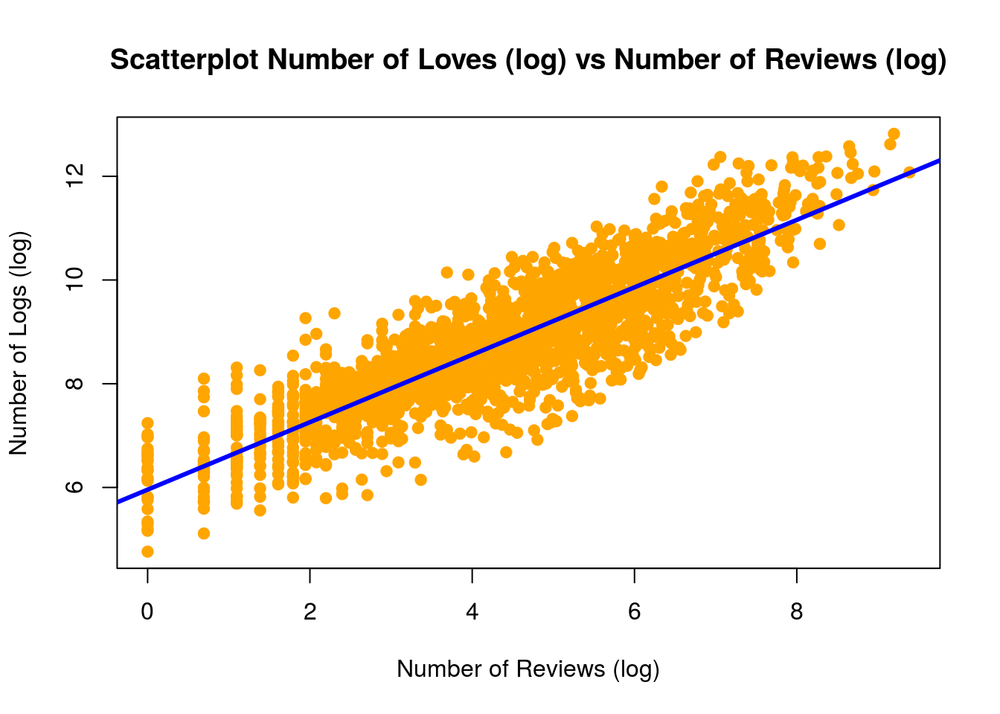
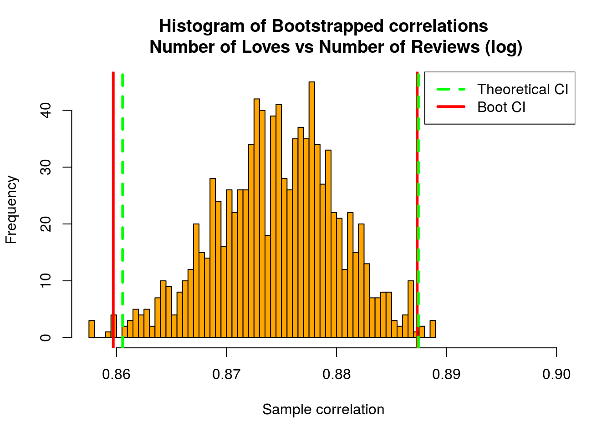

Case Study 1: Continuous variables that are correlated with logLove?
Correlation
We want to see which variables can be best used to predict number of people recommending a product (or Love), so we can start by finding the correlation of logLove with each of the other two continous variables.
cor(cosmetic2[,1:3])[1,2:3]## logReview logPPO
## 0.87466947 -0.06725834As we can see, logReview has a relatively close to 1 positive correlation with logLove, whereas logPPO has a relatively close to 0 negative correlation with logLove. So, we can focus on identifying whether the correlation between logLove and logReview is significant.
Scatter Plot
First, let take a look at the scatter plot between these logLove and logReview.

Visually, there appears to be a strong correlation between logLove and logReview. However, the true values of logLove seems to have quite a variance from the trendline.
Correlation Test
Now, we will perform a correlation test to see the likelihood that there is a non zero true correlation between these two variables.
(cor1test <- cor.test(logLove, logReview, conf.level = .99))##
## Pearson's product-moment correlation
##
## data: logLove and logReview
## t = 81.402, df = 2035, p-value < 2.2e-16
## alternative hypothesis: true correlation is not equal to 0
## 99 percent confidence interval:
## 0.8605609 0.8874369
## sample estimates:
## cor
## 0.8746695The extremely small p-value suggests that there is a non-zero true correlation between these two variables. The 99% confidence interval (0.86, 0.89) suggests this correlation is a relatively strong positive one.
Bootstrap
To be even more certain, we will now create a bootstrap interval for this correlation test and compare the result with the theoretical interval.

The bootstrap interval is basically the same as the theoretical interval.
Conclusion
These results suggest that there is a relatively strong correlation between the log of number of customers recommending a product and the log of number of customers leaving a review (either a good review or a bad review).